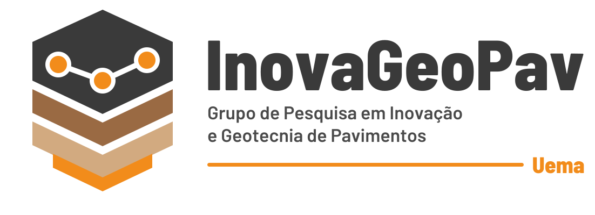
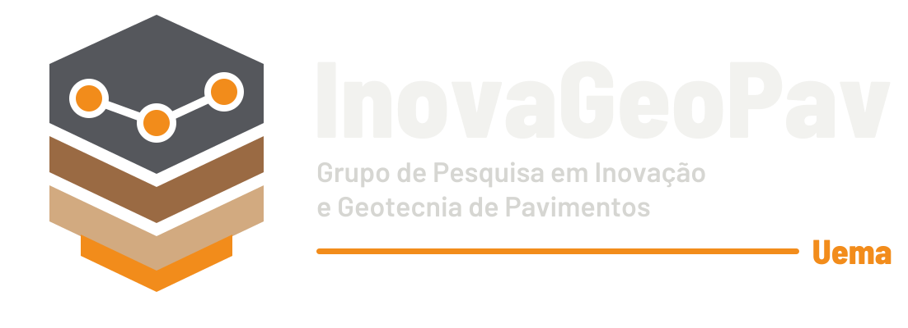
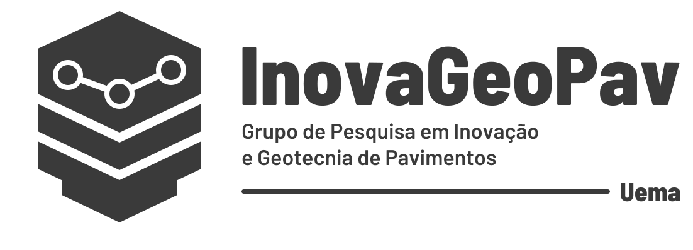
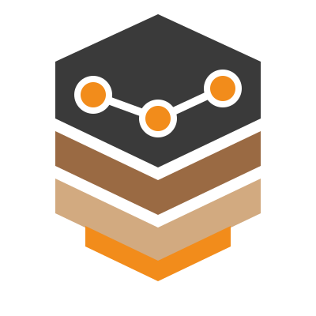

Arquivos da logo
Use sempre estes arquivos, sem redesenhar, esticar ou mudar as cores. O SVG é vetorial e serve para gráfica e bordado; o PNG serve para documentos e redes sociais.






Cores
Asfalto #3A3A3A
Argila #9A6A43
Areia #D2AA80
Laranja #F28C1B
Bordado e tamanhos pequenos
- Envie o SVG para a bordadeira; ele tem só 4 cores chapadas e o branco.
- Abaixo de cerca de 3 cm de largura, use o símbolo de uma cor.
- Fonte do nome: Barlow Semi Condensed ExtraBold (gratuita, Google Fonts).